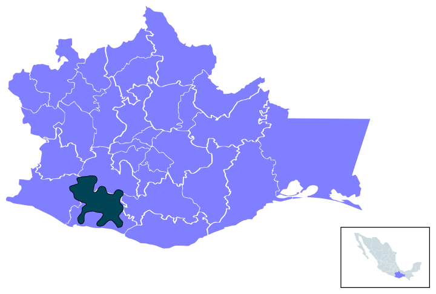

Ya hemos revisado las distintas disciplinas de la antropología y aprendido nuevos conceptos que se utilizan en esta disciplina. Ha llegado la hora de continuar aprendiendo sobre la investigación antropológica, para hacer esto te proponemos tomar en consideración tus conocimientos de metodología de la investigación y ponerlos en acción.
Para aprender sobre la investigación antropológica, vamos a continuar indagando acerca de los Chatinos y su cultura. Aquí te planteamos una problemática actual de este pueblo, esto te servirá de ejemplo para revisar cómo se realiza una investigación de esta ciencia social y que posteriormente puedas plantear la tuya.

Ubicación del pueblo chatino en Oaxaca. Imagen de Layacruz. Wikimedia Commons
En esta ocasión nos dirigimos al año 2020, en San José Manialtepec, Tututepec, Oaxaca. Aquí puedes observar una zona de gran belleza natural, donde hay una laguna con bioluminiscencia y aguas termales. Estos asombrosos cuerpos de agua han llamado la atención de turistas y empresarios que han comenzado a asistir constantemente a estos paraísos, que han sido parte del territorio y la tradición del pueblo chatino.
Los pobladores te cuentan que esto ha traído dinero y una visualización de su cultura, pero también han tenido problemas dado que sus tierras han sido invadidas, reduciendo los lugares para sembrar, cuidar el ganado y se han contaminado sus recursos naturales. Esta historia te hace preguntarte sobre los cambios culturales y sociales que han experimentado los Chatinos y estás interesado en aprender más.
Enseguida te presentamos los pasos para iniciar una investigación antropológica tomando como base este acontecimiento. Te pedimos que revises el siguiente video en el que te explica paso a paso cómo se realiza esta investigación. Presta mucha atención y toma notas para afianzar los nuevos conocimientos.
Iniciación a la investigación antropológica
Esperamos que este video haya sido de utilidad, ¿qué aprendiste a partir de él? ¿qué se queda contigo? El ejemplo que te hemos proporcionado está enfocado en la antropología social y la información que se recolecta está relacionada con esa rama. ¿Qué datos tendrías que obtener dependiendo de la subdisciplina antropológica que te interese? Da clic a continuación para descubrirlo.
Por ejemplo: En la comunidad Chatina puedes obtener medidas de los huesos de restos encontrados en zonas arqueológicas para conocer su altura, así como realizar análisis genéticos para conocer los orígenes. De igual manera puedes obtener información de los habitantes de la zona como: peso, altura y alimentación para identificar los cambios que han existido.
Es momento de poner en práctica lo aprendido, participa en este desafío y confirma lo que aprendiste.
Ahora que te has iniciado en la investigación antropológica, es importante que sepas que la antropología al tener una perspectiva multidisciplinaria, permite imaginar y diseñar posibles formas de interacción y coexistencia entre los seres humanos y su entorno natural. Veamos en qué consiste y cómo se realiza.